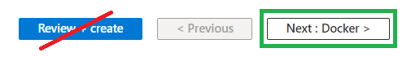

Nightscout in Azure (Docker)
Too complicated? Not what you’re looking for?
Consider a hosted Nightscout service! Check for easier solutions here.
Azure
Nightscout DIY was originally created with Azure but most users dropped it after costs increased.
A new deployment method has been created using a Docker container.
Pros:
Large platform with a reliable history
Well known by the community IT specialists
Using a basic plan and free services keep it free
Cons:
Trial account lasts maximum 12 months
Basic plan and pay as you go is free if you stay within quotas
The F1 free app service plan is designed for testing, not production
The Cosmos database doesn’t integrate correctly with Nightscout
This is a transcript of the original video which cannot be used as-is anymore because the Cosmos (MongDB) database which was used at the time of the video isn’t fully compatible with Nightscout and can’t be deployed in some geographical areas. For reference the obsolete video is here.
Step 0: Create a database
Note
Make sure you created one before starting your Nightscout web app creation with Azure. Come back here when you have a MONGODB_URI connection string.
Migrating?
Copy the connection string from your previous platform: edit the variables and look for MONGODB_URI.
If you don’t see MONGODB_URI but see MONGO_CONNECTION (NOT MONGO_COLLECTION): use its value.
Step 1: Create an Azure account
a) Open a web page in https://azure.microsoft.com/en-us/free/ and click Start Free.
b) Sign in with your Microsoft account if you have one, else use GitHub.

c) Agree and click Next.
Perform necessary authentication.

Step 2: Create your Nightscout web app
a) From the top left ☰ menu or the Azure Services icons, select + Create a resource.
b) Search Web app and click Create.

c) Check you’re still using your Free Trial or 3-Month free Trial.
Open the list in Resource group and pick your group (the one you created in Step 2.f.).

If your free trial expired, select Pay-As-You-Go. It will be free if you use free resources like the Free F1 resource (see below).
d) Decide your site name (only lowercase and you can use - as a separator).
It must be unique: check the tick box at the end of the line is green.
If it isn’t: you need to choose another name…

e) Now select a Docker container, in Linux.
Pick a place close to where you live in the Region selection.
Make sure it is the same than the database region you selected in Step 2.g.

f) Select the free F1 plan.
Limited CPU usage
The Free F1 plan includes 60 CPU minutes per day. It usually is enough for a moderate Nightscout usage but can also be insufficient and provoke interruptions in your Nightscout site. Not recommended for FreeAPS X and OpenAPS users. If you want a more reliable CPU, consider another plan like Shared D1 ($).
g) Click Next: Database > down in the page.
g) Do not change anything and click Next: Docker > down in the page.
h) In Image source select Docker Hub instead of Quickstart.
i) In Image and tag paste the following name:
nightscout/cgm-remote-monitor:latest

j) Click Review + create in the lower left of the page.

k) Verify the summary information:
Free sku
Check the site Name is what you wanted
then click Create.
Wait for the deployment to complete. Do not interfere.
Congratulations, you have created your Nightscout web app.
Step 3: Configure your Nightscout web app
Now you need to tell it where the database is and other important information
a) Click Go to resource
b) In the left menu select Configuration
Check which deployment you’re doing now!:
c) Click + New application setting

d) In Name write MONGODB_URI
Mind your database type!
In the line below, Value, paste the connection string you obtained after creating your database.
In the line below, Value, paste the connection string with socketTimeoutMS.
e) Click again + New application setting (like in c. above) and write API_SECRET in Name.
API_SECRET will be your Nightscout site password, it needs to be at least 12 characters long and you should NOT use spaces if you use @ or ! symbols remember you will probably need to express them using Percent encoding in your uploader and downloader apps. If you’re not sure on how to do this, it is recommended to use only letters (uppercase + lowercase) and digits.
Warning
The API_SECRET is the main password allowing full access to your Nightscout site. Make sure it’s reasonably secure (mix uppercase and lowercase letters, plus digits) and do no not share it publicly. If you think you exposed it by mistake, it is recommended that you change it.
Click OK.
f) Click again + New application setting and write DISPLAY_UNITS in Name.
Acceptable choices for the units used in Nightscout are mg/dl or mmol/L (or just mmol).

Click OK.
g) Click again + New application setting and write ENABLE in Name.
If you don’t use Dexcom Share to get your BG data in Nightscout, copy the line below to Value:
careportal basal dbsize rawbg iob maker cob bwp cage iage sage boluscalc pushover treatmentnotify loop pump profile food openaps bage alexa override speech cors
If you want to use Dexcom Share as a data source copy this one (it includes the keyword bridge):
careportal basal dbsize rawbg iob maker cob bwp cage iage sage boluscalc pushover treatmentnotify loop pump profile food openaps bage alexa override speech cors bridge
Click OK.
h) If you want to use Dexcom Share to have your data in Nightscout directly, you will need to add these three variable Names:
BRIDGE_USER_NAME Your Dexcom account username to receive CGM data from the Dexcom Share service.
BRIDGE_PASSWORD Your Dexcom account password to receive CGM data from the Dexcom Share service.
BRIDGE_SERVER US if your Dexcom account is in the US, or, if you are bridging from the Dexcom Share service and are anywhere outside the US change this to EU.
!!!note
If you use a DIY closed loop system it is recommended that you let it upload to Nightscout instead of importing using Dexcom Share and the bridge plugin.
Remember to add bridge at the end of the enable variable in the list below.
MOST COMMON ERRORS
The most common error on initial Nightscout setups is that people incorrectly use an old account or an old password. To test your username and password, go to Dexcom’s Clarity page (check here for USA accounts and here for the others) and try logging in to your Dexcom account. If your account info isn’t valid, or you don’t see any data in your Clarity account… you need to figure out your actual credentials before moving ahead. See here for troubleshooting tips and information on your Dexcom account.
Password
Some people have had problems with their bridge connecting when their Dexcom passwords are entirely numeric. If you have connection issues in that case, try changing your password to something with a mix of numbers and letters.
Hint
You need to have at least one follower to use Dexcom Share. See here.
i) Click Save, then Continue.
c) Open a new browser tab or window and Log in Heroku, select your app
 d) Click
d) Click Settings
 e) Scroll down and click
e) Scroll down and click Reveal Config Vars
 f) Put the two windows Heroku and Azure side by side
f) Put the two windows Heroku and Azure side by side
 Now for every (no, not necessarily, read until i and come back) variable you need to do the following:
Now for every (no, not necessarily, read until i and come back) variable you need to do the following:


{kind=link}
{kind=link}
{kind=link}
{kind=link}
{kind=link}
{kind=link}
{kind=link}
{kind=link}
{kind=link}
{kind=link}
{kind=link}
{kind=link}
{kind=link}
{kind=link}
{kind=link}
{kind=link}
g) Click + New application setting
h) In Name write the variable name from the first column in Heroku or the one in red with Railway
Then, in the line below, Value, paste the value from the second column in Heroku or the one in green with Railway.
Then click OK and go for the next one.
You might not need to copy ALL the values, if you know which ones you need you can go ahead.
If you don’t really know which ones you want to copy there’s only few that are strictly necessary:
API_SECRET
MONGODB_URI Note: if you don’t see MONGODB_URI but see MONGO_CONNECTION (NOT MONGO_COLLECTION) use its value.
DISPLAY_UNITS
in ENABLE paste this:
If you don’t use Dexcom Share to get your BG data in Nightscout, copy the line below to Value:
careportal basal dbsize rawbg iob maker cob bwp cage iage sage boluscalc pushover treatmentnotify loop pump profile food openaps bage alexa override speech cors
If you want to use Dexcom Share as a data source copy this one (it includes the keyword bridge):
careportal basal dbsize rawbg iob maker cob bwp cage iage sage boluscalc pushover treatmentnotify loop pump profile food openaps bage alexa override speech cors bridge
If you have your data coming directly from Dexcom share those three:
BRIDGE_USER_NAME
BRIDGE_PASSWORD
BRIDGE_SERVER
i) When you’re done copying, click Save, then Continue.
j) From the menu select Overview, then Browse.

It will take some time before the window opens.
New Nightscout Setup
a) Your Nightscout site should open and direct you to a new profile creation.

b) Setup your Time zone and eventually all other fields. Do not leave any fields empty. If you don’t know which value to use, just use the default value. You can change these values later at any time.

c) Browse down to Authentication status and click Authenticate. Enter your API secret. Click Update.

d) Click Save.
{kind=link}
e) If the following pop-up shows up click OK, and check status (upper right of the window).

f) If you need to modify your profile after this, authenticate with the lock icon (top right of the page): enter your API secret. Then click on the hamburger menu and select Profile Editor.

Privacy warning
Anyone with access to the URL of your Nightscout site, can view your BG and run reports of your data. It it strongly recommended that you enable security to your site once you’re done with the setup
g) Dexcom Share users should see data flowing in after some minutes. xDrip+ users (including Medtronic CareLink followers) should setup the uploader as shown here. xDrip4iOS users here. AAPS and Loop: consult the relative documentation.

You have completed a new Nightscout site creation. You can continue here now.
The following section provides more information that you might not need to use now.
Editing Config Vars in Azure
a) Log into Azure : https://portal.azure.com/
b) Select your App service, your Nightscout site name (you should see it in recent resources)

If you didn’t find it, it will show in App Services

c) In the left menu select Environment variables
View a variable value
Click the eye icon to display the hidden value
{kind=link}
Modify a variable
Identify the line with the variable you want to change and click the pen icon at the end of the line
Click OK to save it when finished
Remember to save modifications when done with your variables!
{kind=link}
Delete a variable
Identify the line with the variable you want to delete and click the bin icon at the end of the line
Remember to save modifications when done with your variables!
{kind=link}
Add a variable
Select New Application Setting and type variable name and value
Remember to save modifications when done with your variables!
Note
Multiple lines values with \n should be edited manually as the character \ will be duplicated.
Example: LOOP_APNS_KEY
----BEGIN PRIVATE KEY-----\nMIGTAgEAMBMGBygGSM49AwEHBHkwdwIBAQQg7c8w00t5ju7N980r\nerN8N+isnJoec+ohIEuD0teRbPmgCgYIKoZIzj0DAQehRANCAAREnRISLSiFgdn4\nLbf44yIKspXKr7GpPBVshv3ShOms2qHTdAFriXXRPmbq7eAJuFrxpYOduU1dl9vo\nouciW0je\n-----END PRIVATE KEY-----
Insert the value like you’ve done for all the others.
{kind=link}
At the top of the Environment variables view, select Advanced edit.
{kind=link}
Scroll down the list to your variable name and delete all duplicated \ so that there will be no more \\n separators but only \n.
{kind=link}
Click OK to save the modified variable.
Save your modifications
When you’re done modifying your variables, click Save (or Discard if you don’t want to save).
Your site will redeploy if you changed the configuration. Expect a few minutes before it comes back online.
{kind=link}